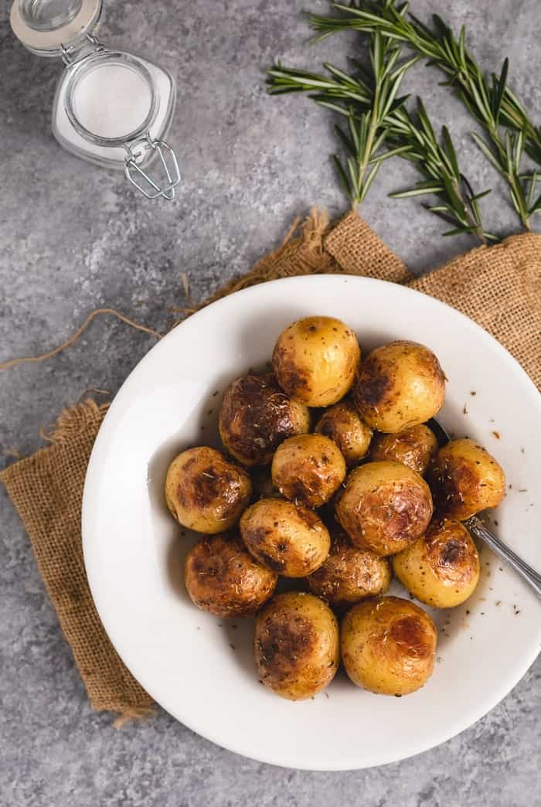

Roasted Potatoes

Description
You can make super crispy roasted potatoes right in your Instant Pot with just 11 minutes of pressure cooking. There is a secret method for extra-crispy results that you won’t find in the Instant Pot recipe book!
Ingredients
- 2 lbs. baby gold potatoes
- 3 garlic cloves
- 1 cup chicken broth
- 2-3 Tablespoons vegetable oil
- Salt/Pepper
- 1 teaspoon Rosemary
- 3/4 teaspoon oregano
- 3/4 teaspoon thyme
- 3/4 teaspoon sage
- 1/8 teaspoon nutmeg
- 1/8 teaspoon pepper
Steps
- Pierce each potato with a fork and place in the Instant Pot along with the garlic and chicken stock. Secure the lid and ensure that the steam valve is shut. Pressure Cook for 11 minutes.
- Quick release the steam valve and open the lid. Drain out the chicken broth and pat the potatoes dry.
- Set the Instant Pot to sauté mode. Add 1-3 Tablespoons of vegetable oil, along with the potato seasonings.
- Leave the potatoes in place for 5 minutes or so to allow the first side to brown. Use kitchen tongs to carefully rotate them until each side is browned and crisp. Add more vegetable oil if necessary. Remove them from the pot and serve!